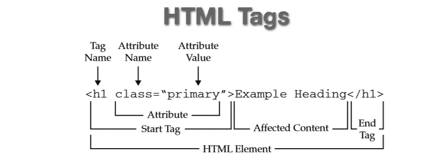

So you want to be a web developer? Here are some must follow rules and principals for you to succeed-
daily 6-8 hours dedicated
module, conceptual, practice & support if done timely assignment will be peice of cake
Deadline is deadline. 2359 means 2359 not 0000. Assume deadline is 2200 and work accordingly. Projects & Mishaps don't come with previous instructions & warnings. Stay prepared
There is option for Resubmission. To build the habit of overdelivering. Your 1st submission might not be the best but it's your duty to deliver the better work.
7 steps of behavioral adjustment
Install VSCode, NodeJS & GitCSM. Open an account in github.
Get in the habit of Taking notes in your own language after a few minutes constantly.
Develop your rythm, get into a habit. Don't let exams and illnesses be a hurdle, eliminate them beforehand. must maintain your flow no matter what.
Write down what and why you want after 6 months. why you will give your fullest, why no compromise in effort?
Entertainment is necessary, but it's only for 1-2 hours. Don't make your life a circus.
You won't understanding everything in one go. But you WILL stick to the hussle no matter what.
Now let's get started with the learning..
Basics of HTML
What is HTML?
HTML means hypertext markup language. You must've notice any website is mainly composed of texts. hypertext means you can connect texts internally and externally of any page by hyperlinking.
markup means marked upped to do specied job. We can't write in normal word document format and expect our browsers to be able to read. Every new line, new paragraph, color of text and background, everything, and I truly mean EVERYTHING must be specified. We do it in a system that computers understand, using markup tags, thus markup langauge.

markup tags genarally start with two less than greater than signs (<>) with a tag name in between and ends with the same but a forward slash before the tag name. between these two opening and closing tags, stays the content. from opening to close is considered one element.
Let's look at some formatting tags;
basics;
for example to create paragraph we use element name "p" and to bold and italicise words we use "b" and "i". we can also use "strong" to strenghen a peice of content and "em" to emphasise a content. these two look similar to bold and italic but these two are semantic tags (more on that later). we can make words big or small using "big" & "small" tags. "u" to underline & "s" to strikethrough.
headlines;
we
can
use
headings
of
6 sizes
by using "h1-h6"
lists;
we can create a paragraph like element for list with "ul" or "ol" tags depending on if we want a unordered or ordered list. these also do the indenting work of list items. we can add list items with "li" tag.
you can also list withing list items called nested items.
containers;
we use "div" and "span" as container tags. 1st one is block type and the 2nd one is inline.
we use "br" to create a line break withing paragraph like this.
buttons;
don't forget we can create with "button" tag for various function.
Websites are mainly composed of texts and images. So heres how you add images genarally;
in "img" tag you mention the source in "src=''" the source can be local or from the net. you can use "alt" attribute too if you want to be accecibility friendly if for some reason viewing of the image is unavailable. Here's an image of a kitty!
no need for closing tag as image is a void or self closing tag just like the line break tag 'br'.
You are using HTML but don't know how to hyperlink texts?
to hyperlink you need an anchor + hypertext reference. in the opening tag after "a" you add an space then the attribute "href='link'". the text content in between the tags act as the anchor for the link. Here is a link t HTML Element Reference - By Category
Imagine people are impressed with your work & wan't to hire you
It would be easier to connect with potential clients if you have a form in your webpage right? just use the "form" tag with mainly "select", "input" subtags & "placeholder" attributes. Heres a demo-
tips
ctrl+b closes sidebar
ctrl+s saves the current state of file (or activate autosave from "file")
shift+1 to enter the html page structure, double tab to enter title, then single tab to enter body.
Alt+Shift+down copies any element.
ctrl+` or ctrl+j to open the VSCode Terminal.
ctrl+alt+p opens command pallate.
take live server link and put it in VScode simple browser for in app view.
ctrl+alt+right moves tab to right in side by side view.
summery
so far we have learned about inline tag, semantic tag, block tag, container tag & void tag and some keyboard shortcuts.
Hey that's pretty neat page. It'd be quite bad if someone lays evil eye on it..
Don't worry, we have ??? system. For that we installed git in our pc and opened an account in github. Now here's how you back up all your work:
Creating a Repository:
Before we start backing up we must first create a storage unit right? Here's how we do it.
Create new repository > Create a new folder of the exact same name in C drive;
Open the folder in VSCode > New File > index.html > shift+1 > double tab and give a title;
ctrl+j
git init
git add .
git commit -m"first commit"
On your very 1st repository setup you will get, "Author identity unknown... Run..". Then you will copy-paste the following messeges from the terminal and complete the registration step;
git config --globaluser.email""
git config --globaluser.name""
git branch -M main
git remote add origin 'link'
git push -u origin main
Then we can see "index.html" as our first commit (every upload is called a commit).
How to push new code:
We should push code after every few changes so that we don't lose any progress ever. Here's how;
ctrl+j
git add .
git commit -m"messege relating to the new changes & this commit"
git push
And that's how you secure your work smartly!
How to do them from the mighty cmd:
Open cmd
check- "git --version" to know if you have git installed successfully in C
If your git and projects are in the C directory (aren't in some exceptions);
C:\Users\username>cd folder
C:\Users\username\folder>cd repository
C:\Users\username\folder\repository>git init
Rest are same as before
If your folders and files are in another directory but git in C;
C:\Users\username>cd D:
D:\>cd folder
D:\folder>cd repository
D:\folder\repository>git init
Rest are same as before
Common errors:
Not checking if we are in the right directory & folder
Not respecting the command serial
Spelling & Capitalizaions errors
Not reading the fuking error messeges
tips
In the node icon (Source control, shortcut ctrl+shift+G) commit and undo options are present.